As a note, this month was very heavy on the data side for me (besides having only 3 weeks due to a vacation at the start of the month). So don't be scared when you see the length of this section 😉
For a very long time in my youth I only read comic books, but then during a vacation I picked up a copy of Terry Goodkind's The Wizard's First Rule and from that moment on I was hooked on the Fantasy genre. I finally understood the feeling of disappearing inside strange and magical wolds that the authors created through their words (I also had a Manga phase for a few years). So for this month's topic I knew that I wanted to look into Fantasy books.
Since I don't think it would be very legal to dive into the words of a recent book itself (say, my favorite one), I instead tried to find a different angle. And one thing that struck me is that I always feel that the titles of Fantasy books are somewhat similar. More in terms of subjects to use for titles; about magic (makes sense), or "some name/object of some fantasy place", such as "The Spears of Laconia". Maybe I could dig into trends and patterns of these titles?
I thus had to get my hands on a whole bunch of fantasy titles. Scraping the web seemed the fastest way. On Amazon I could find a section that showed the top 100 Fantasy authors from that day. I wrote a small scraper in R with the rvest package that went through the 5 pages (20 authors per page) and saved their names. However, I couldn't find an easy way to get their most popular books (unique ones) and the Amazon API seemed too much of a hassle. Luckily, Goodreads has a very nice API that can give back the top 30 most popular books per author, together with information about the number of ratings, average rating, publication date and such. I therefore wrote another small script with help of the rgoodreads package that got back the top 10 most popular books for each of the 100 authors. I first tried 30, but most authors don't have that many and then you start getting back a whole lot of non-English translations of the same book. With 10 per author I only found 2 books that were non-English (I did a quick manual check of the result and deleted those two).
Next came the trickiest part, text mining on the titles, which consisted of a few phases: text cleaning, getting hypernyms (I'll explain later) & clustering of similar titles. For the text cleaning I made a few choices. For one, I didn't want any authors that had (co-)written only 1 popular book, based on the number of ratings of Goodreads. So I kept the authors that had a median of >20 ratings on Goodreads. That took out 3 writers, 2 of which had co-written Harry Potter and the Cursed Child with J.K. Rowling. Next, I wasn't looking for any omnibus, a collection, books written by too many people. For this (although not perfect) I looked at how often the exact same book title appeared in my list and took out those that appeared more than twice. Furthermore, I removed all books with terms such as box, set, edition (I checked each of the terms to see that I was removing the right books). Finally, I scrapped books with 0 ratings.
Next came the text cleaning. Mostly the basic stuff; removing digits, punctuation, stop words (and some specific words, such as Part). I did a quick word count after the title cleaning to get a sense of what words occur most often in book titles. And since these are words, I of course had to visualize it as a word cloud 😉 The bigger the size of the word, the more often it appears in titles (the location and angle have no meaning).
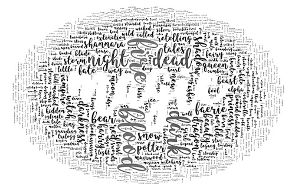That was nice, but I wanted to look for trends. And for a standard text mining algorithm, the words wizard and witch are as different as wizard and radio, even though we as humans know better. So I tried to find a way to automatically get hypernyms of nouns, which you can see as a word that lies higher in the hierarchy of concepts I guess. Like a dog, which is a canine, which is a mammal, which is an animal, etc. Maybe on a higher level of concepts, I could replace witch and wizard both with the same term, like magical being or something. I remembered that WordNet might be able to help me with that, but it took me some effort and help from StackOverflow to get it installed on my Mac with Sierra (I wrote about the steps and changes I had to make here).
I got the hypernyms per noun into a file and then I saw... it wasn't going to be enough. Besides many not having been given a hypernym, one of the problems was the fact that some words were already "general" enough, but I still requested a hypernym that made it even more general. Other words were still not general enough, I needed the hypernym of the hypernym (or even higher). At this point, and with about 800 different words to "generalize" I just faced the truth and set about doing it manually. The hypernyms that I had did help to classify a word faster. It took me about 2 hours I think, but afterwards I had a list of all the words and their general terms such as a name, magic, location / place and so on.
So I took the list back into R, replaced all the specific words with their general ones and then turned the strings of letters into a vector (a document term matrix to be precise, which has each string represented by a row and all of the unique words get a column. There are a few options, but generally a value inside this matrix contains the number of occurrences of that word in the particular title) that I could then use for clustering.
Since these titles were very short in number of words, I knew from past experience that the clustering would not really give back amazing results, there's just not enough information. Books with just one fantasy term for example, like Warbreaker, really don't give the algorithm much to compare with others. I therefore tried several things to see which would visually give back the most interesting result. My goal with the clustering was to get back an x and y location for each book, where similar titles were grouped together, that I could then plot in a browser. I tried K-means, Principal Component Analysis (with the 2 most important vectors) & t-SNE with 2 dimensions. Inspecting the results I found that t-SNE gave back the best result. The books were spread out nicely and there were clear groups of different topics (although sometimes a book was placed/clustered too much on one word I found). I quickly placed the most occurring terms on top of t-SNE result to get a feeling for where certain topics were located. This wasn't perfect, since most terms had a hotspot but had a few straggling books around the whole, so some terms were pulled a bit towards the middle. I'd have to "fix" that later.
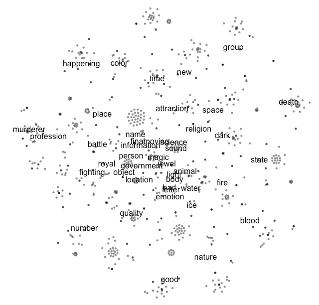My very final step was to prepare the data for creating a path between all of the books from the same author. Many books didn't have publication years, so I couldn't do it chronologically sadly. The next best thing was to just draw a line that would create the shortest path, so that the visible length of lines in the final visual would be minimal. Thankfully, I could use the Traveling Salesman Problem approach and the TSP package in R to get the order in which the books should be connected to get the shortest path.
The entire process from text cleaning to clustering to TSP can be found in this file.
Throughout the data preparation part I was thinking about how I wanted to visualize the results. From the get-go I already had the idea to place the books in a plane representing similarity in titles, hence the clustering. But how to get an interesting shape for the books?
Since I was looking at titles, I thought it would be fun to somehow base the resulting "shape" of a book on the title as well. I could split the 360 degrees of a circle in 26 parts, one for each letter in the alphabet (the English language thankfully doesn't really use any accented or "odd" letters), and then place small circles on the correct angles, one for each letter in a title. I would then connect all the letters from a word with curved lines. In the sketch below you can see the idea, where I was still deciding if I wanted the lines, connecting the letters, to only go round around the outside, or through the middle of the circle as well (if the distance between letters was too great).

I knew that the lines between the letters would eventually be made through a self written function that creates SVG arc paths. One of the elements that I had to figure out for theses paths is the sweepflag (when you draw a curved line between two points, should you draw it clockwise or counterclockwise? See my blog on placing text on arcs for a much more elaborate explanation of what makes up an SVG arc path). Not too difficult, but much easier to figure out if you draw it.
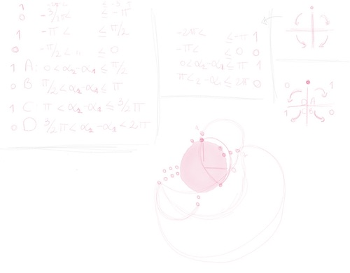Skipping ahead a bit to a point where I had already started on some simple coding (plotting the book circles, nothing fancy), I looked into the general terms of titles again, such as magic or royal. I knew that placing them in their average location (as in, the average x and y location of all books that contained that term) wasn't quite right. I wanted to have them more on top of their hotspots. Therefore I created simple plots in R that showed me where books relating to a certain term were located (in red below).
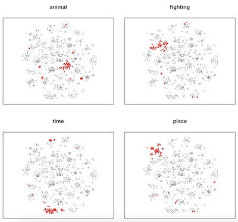So when I had a simple SVG of the book locations in my browser, I downloaded the SVG (using SVG Crowbar), took that into illustrator and manually (yes, again) started to place ovals for the top ~30 terms that had a clear hotspot. Which resulted in the SVG below that I then copied back into my html file, loading it underneath the book circles.
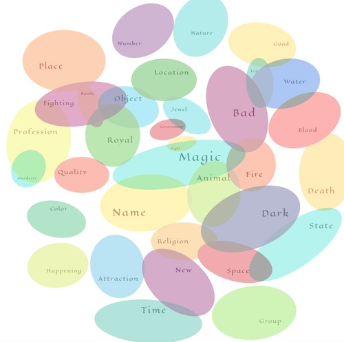What this exercise also taught me was that magic is almost everywhere, hence the title of the final visual 😉
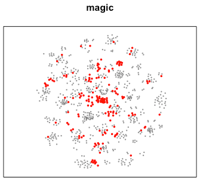With the x & y locations finally attached to my books. I could get around to coding it up with d3.js. The start was rather straightforward, just like creating a scatterplot. Through past experience with creating arced paths between locations (like my previous month's visual) that went without issues as well. I did size the circles in area according to how many ratings the book had gotten (Goodreads people definitely like J.K. Rowling 😄 ). The thickness of the path that connected books of the same author were based on the author's rank in the Amazon top 100.
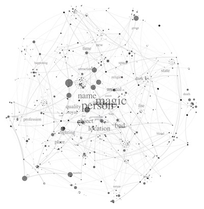Next, I focused on the book "shape", adding the small circles, one for each letter in a title, around the main book circle and then connecting the letters of one word with a path. I had some fun with these arcs, trying to make them swoosh a bit. The image below is still my favorite visual result, but the paths were getting way too big, obscuring titles and other books. So I tuned it down a bit.
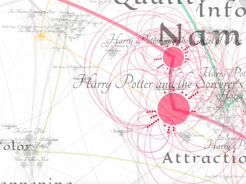To make the visual a bit more personal, I chose my top 3 authors and my favorite books of these 3 (and 2 others that I enjoyed a series from) and marked these with colors, both in terms of circles and paths.
As you can already see from the image above, although the t-SNE algorithm had done a great job of separating the locations of the books, when I resized the books according to their ratings and added the full titles above, many books were overlapping. And since it was important to be able to read the title of a book I wanted to slightly adjust the positions of the circles to reduce overlap. I thought about using the collision algorithm that is in d3 v4's new force layout. But I was afraid that might shuffle the books around too much, their locations within the current layout were rather important. So, yes for a 3rd time, I took the manual approach. I wrote a small function that made it possible to drag each book around (using d3.drag) and then would save the new location in the data. I've since come to love the fact that you can save variables into your local browser (using window.localStorage.setItem('books',JSON.stringify(books)) ) so that, even after a refresh, the books would reappear on their moved locations! Surprisingly, it only took me about an hour to slightly shift the ~850 remaining books. With these updated locations I created a new csv (also redid the Traveling Salesman Problem algorithm, just to be sure) and this became the data that is used for the final result.
With the updated locations and the term areas added underneath, the visual looked like this
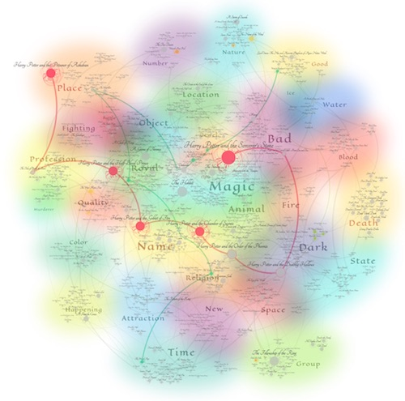Now I really had to think about layout, legends, text. It was the end of November and I was going to Melbourne to speak at CSSConf AU, which was amazing, but that did severely limit the time that I could spend on my visual. So December came and I still wasn't finished. As I usually seem to have, I'm trying to plot too much data on the screen, which doesn't help performance. And this month was no different. For mobile I decided to replace the SVG with an image and a note that the desktop version was interactive. But sadly I again didn't have the time to move the whole visual to canvas.
On a 13 hour flight from Melbourne to Abu Dhabi I created the layout surrounding the visual; title, intro text and legends below. Creating the animated legend of the swooshes has turned out to be one of my favorite pieces of the visual. And it was a bit of a challenge to create without the a connection to the internet, and thus stackOverflow, at 10,000 feet high. It's probably not the most efficient code, but it works!

There's only a minor interactive element in the final visual; when you hover over a book, it highlights all the books by that author. So I thought it would be a nice idea to turn the visual into a high quality print (which is an area I'd love to explore more, creating printable visuals). I did take out the personal touches of my favorite authors, which didn't seem to make sense for a general print. And since I'm already selling a few other prints, I just added it to my INPRNT and Society6 store, in case you like it ^_^
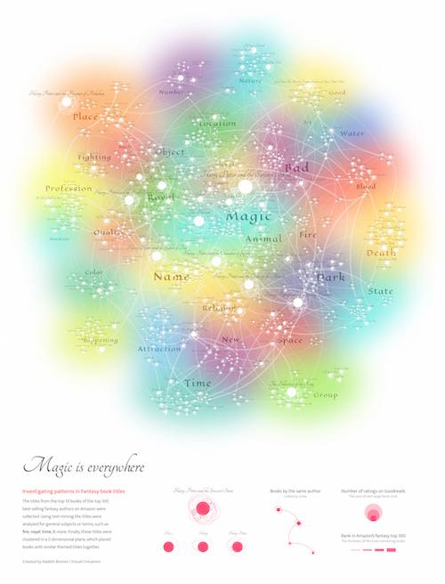As you might have noticed, I've turned all books white, since there's a rather bright rainbow like background. It seemed like the only remaining "color" to use that truly fitted was white. But that was really it. The coding part itself wasn't too difficult this month, the swooshes were probably the most intricate. It was more about going back and forth between data, illustrator and d3.js that took more time than expected. I'm happy with the end result ^_^ I love rainbow colors, and the blurry aspect makes it look a bit magical, haha. It perhaps goes a bit more towards the data art side, but I always like that anyway.
I did notice that there are far more therms that relate to bad things, such as blood, death, fire, than things relating to good aspects, such as light. Maybe bad things sell better 😉 Also, I had expected that many authors would probably be fixed within a certain region of the map, all their books following the same trend. But that turned out to be false, most authors are spread across the map. Only a few really stick within one location.
Well, I hope you'll have fun investigating and exploring the map to find your own favorite authors and get to know the wonderful world of fantasy book titles. You can find the final result here
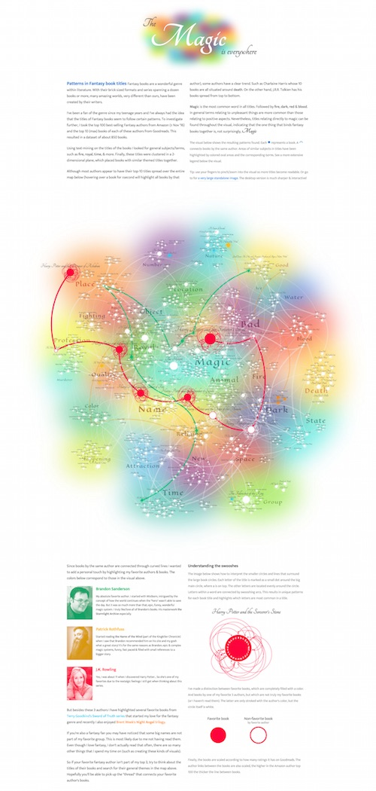And now I really need to start on December!
I have so many things to say and feels to declare for this month, it has been a long and arduous journey. First, I took out the "week 1" part of the header because I started this thing in the last week of August. And it took until second week of December. It's been a long time. Second, my November was Hamilton the musical - not quite a book, unless you count Hamilton the Revolution (aka. the Hamiltome). Third, this Hamilton project is actually a contract for Polygraph, published on their site.
So I want to thank Nadieh and Matt from Polygraph a bucket load, for letting me finish Hamilton as my November data sketch. It helped me loads, because there was no way I was going to be able to finish Hamilton and another data sketch in November, with my travels to Singapore taking up half the month. It also worked out well because I had wanted to do a write-up for all the things I went through for Hamilton anyways, and Nadieh was encouraging of that.
The first thing I did was go through the Hamiltome, and mark any recurring phrases with a corresponding number and note it in my sketchbook:
 After that, I had to manually enter all the data. Thankfully, there were already the full set of lyrics online, but I had to go through all the lyrics again to enter the characters, the conversations, and themes in a format that I could use. This whole process took a painstaking three days (and then afterwards Boyfriend wondered if I could have done it in a more automated fashion and I glared at him).
After that, I had to manually enter all the data. Thankfully, there were already the full set of lyrics online, but I had to go through all the lyrics again to enter the characters, the conversations, and themes in a format that I could use. This whole process took a painstaking three days (and then afterwards Boyfriend wondered if I could have done it in a more automated fashion and I glared at him).
 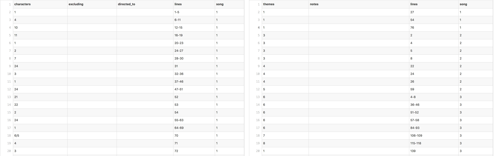
(Raw characters and conversations data)
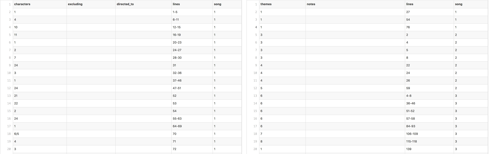
(Raw characters and conversations data)
(Raw themes data)
Now that I had all the raw data, I wanted to join the metadata (characters.csv and themes.csv) with the actual lyrics. At first, I gave each line a key and mapped the data onto that, but after seeing how messy and abundant the small dots were, I decided to group the lines by a consecutive set of lines by a singer. 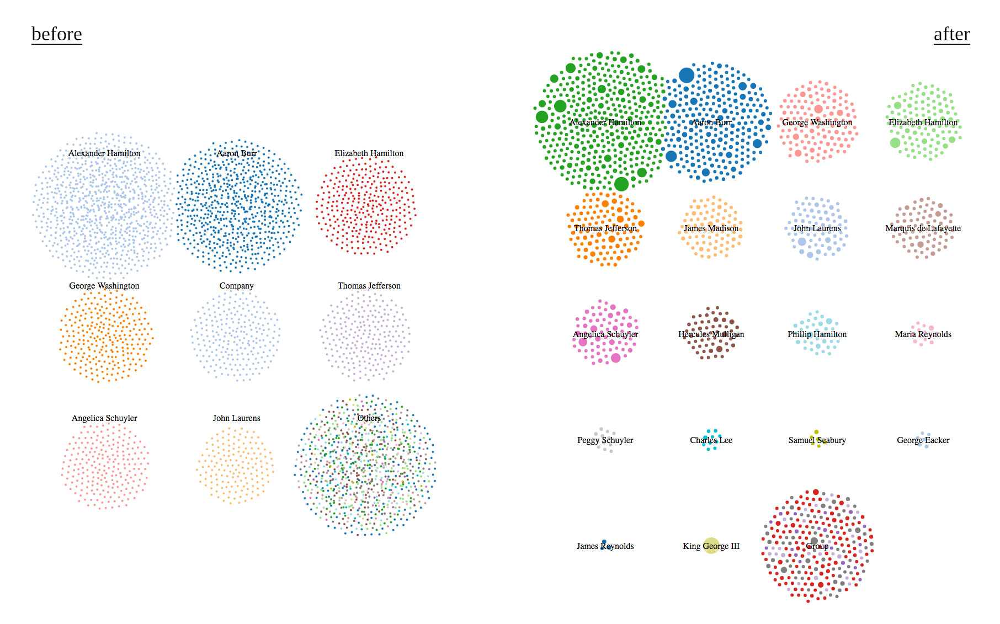 The code for joining the metadata to the lines can be found in merge.js, and the resulting processed data can be found in src/data (which has a README). The format of the processed data is unfortunately convoluted, since I had to deal with the fact that themes could start in the middle of a set of lines and span several of them.
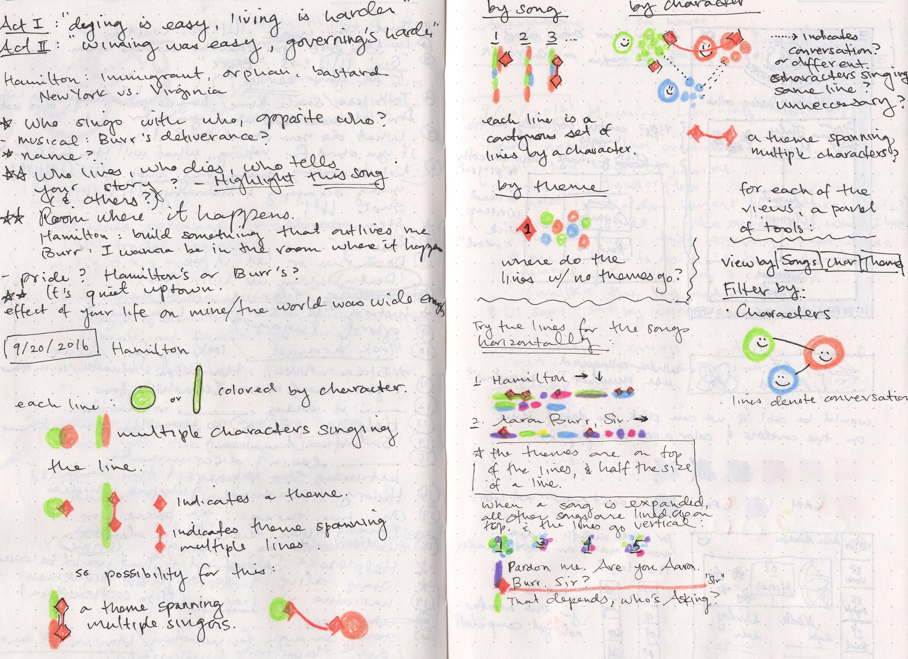 Once I had the data, I knew I wanted to lay out the lines in a way I could get a sense of who was singing when and for how long. To do that, I thought of two versions of how to depict a line: a circle and a long, narrow bar. To indicate when a line was a recurring phrase, I played around with the idea of a diamond that stretched across lines. And to deal with multiple singers in a line, I thought of overlapping narrower bars on top of each other.
(Looking at the original sketches, I am amazed by how foolishly ambitious I was; to think that I wanted to switch between views grouped by characters, songs, and layed out by song, and then also have filter capabilities in all those views. I was young and naive.)
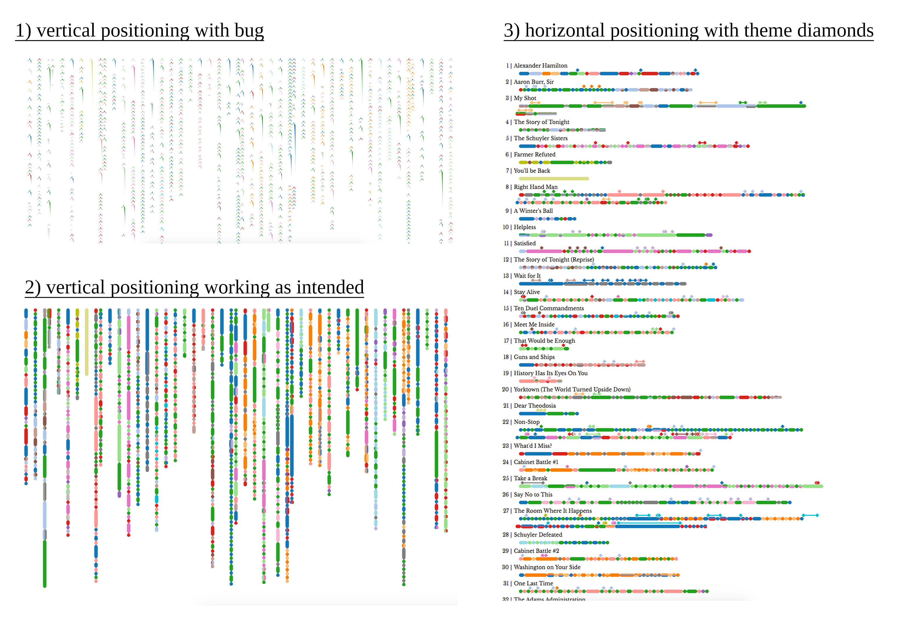 (The convoluted code for positioning the lines)
The first thing I did when I got back to the computer was to figure out how to lay out the lines by song. Positioning things always always turns out more painful than I give it credit for, and after some bugs and mishaps (math and svg paths) I ended up with the first vertical version, and eventually the horizontal version with the themed diamonds. (That last one has a super subtle bug that took me a while to notice - any Hamilton fans notice it?)
Now if I thought the positioning was bad (that thing only took a few days), the filters were a nightmare. It took me a few weeks on and off to work through all the logic and bugs - I paced around my bedroom and around my living room muttering to myself (the whole freelancing and working by myself thing has had an interesting effect on my social skills). I hadn't felt so frustrated and happy and alive with a piece of code in a long time.
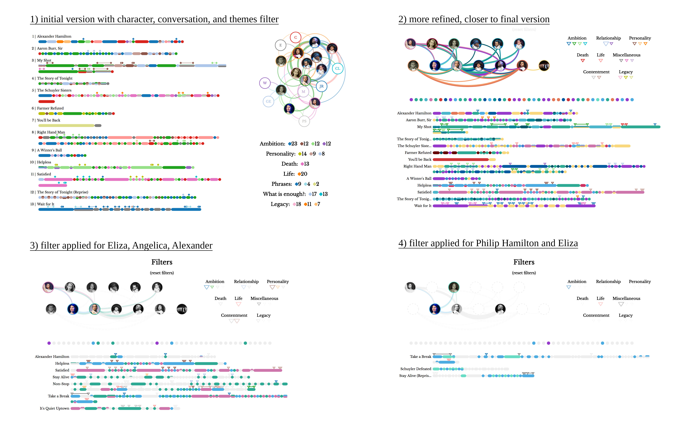 The final logic I ended up with:
And the interaction that stumped me a bit when filtering: after a certain combination of filters, there are characters, conversations, and themes that can no longer be selected. Take, for example, if we filter by Philip Hamilton (#4 in the above image): notice that some characters, conversations, and themes are missing, denoted only with dotted outlines. This is because Philip doesn't have that many lines, so the songs that he is in (Take a Break, Schuyler Defeated, Stay Alive (Reprise)) don't have many other characters singing. If I allow a user to select any of those characters that don't have a line in those songs, no songs will show up and confuse the user, so after a bit of consideration, I decided to simply disable those users if they no longer appear in the songs.
I worked out four states that a character, conversation, or theme could be in:
{kind=link}
{kind=link}
{kind=link}
{kind=link}
{kind=link}
{kind=link}
{kind=link}
{kind=link}
{kind=link}
{kind=link}
{kind=link}
{kind=link}
{kind=link}
{kind=link}
{kind=link}